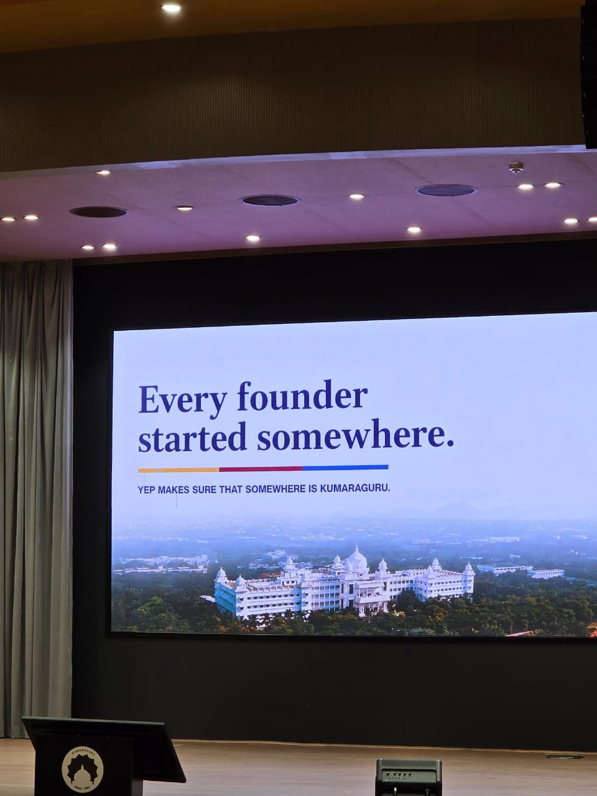
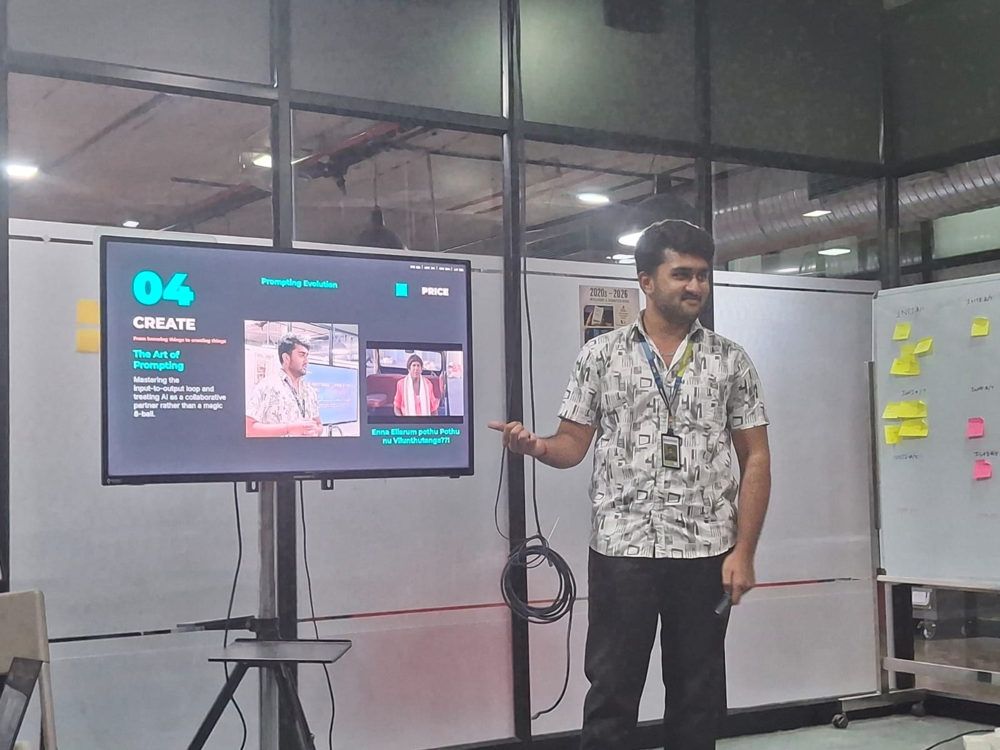
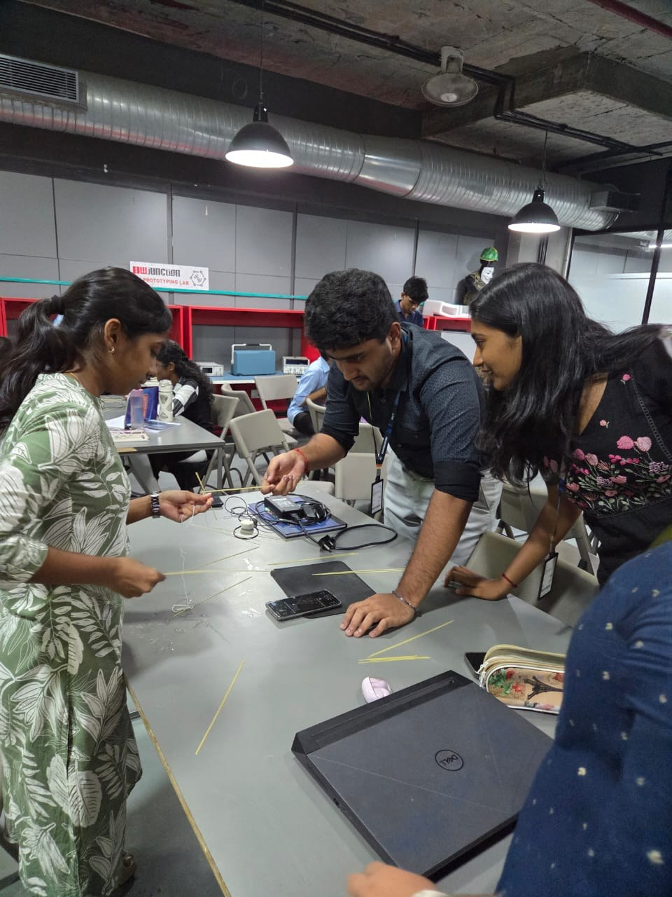
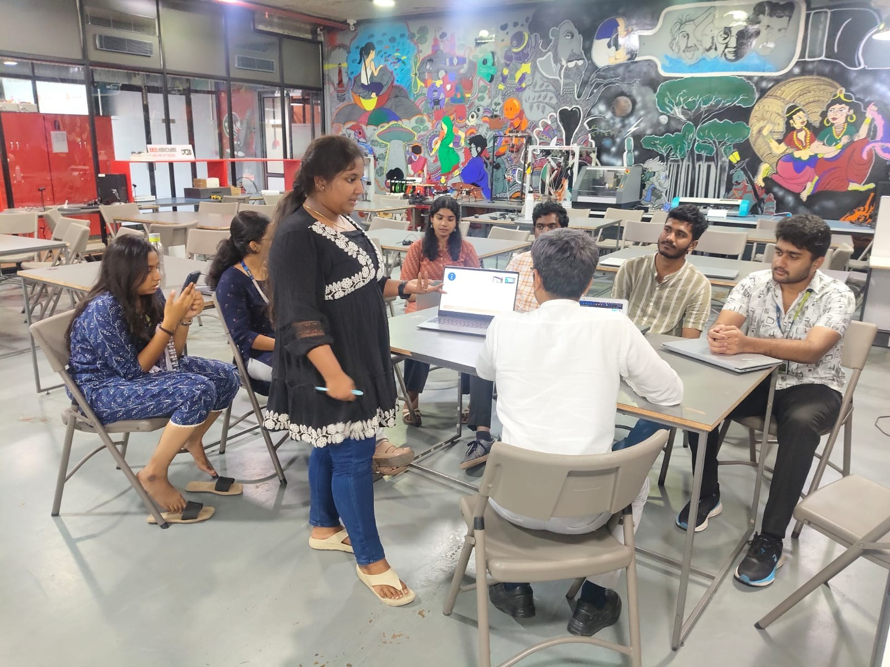
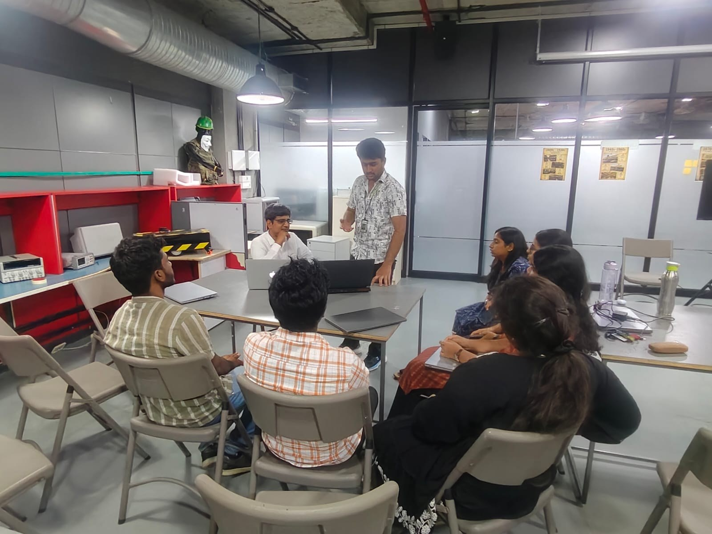
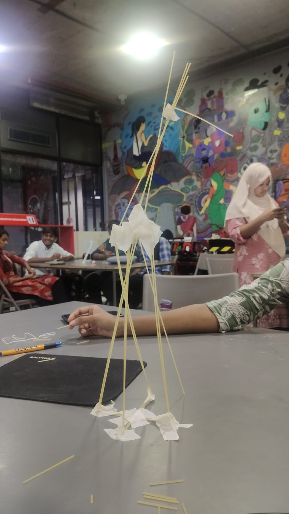

Enter the Room as Strangers
MONDAY, AUGUST 17 · BREAKING THE SEAL
We entered the room as strangers. Initially, I sat with my familiar CSE circle. Soon after, we were asked to stand up and introduce ourselves—not just stating our names and departments, but articulating what we were exceptionally good at and what value we could contribute. I introduced myself as Buvanesh S., Third Year CSE, highlighting my strengths in leveraging AI tools, Deep Learning, and Game Development. It was a catalyst for introspection: in a room full of multidisciplinary talent, how do you clearly define your engineering value proposition? Gowri Shankar facilitated a Rock-Paper-Scissors tournament activity. The purpose wasn't the game itself; it was an intentional social icebreaker designed to dissolve peer friction and spark cross-department collaboration. By afternoon, we transitioned from socializing to problem formulation, formulating three distinct commercial challenges and pitching solutions.
"The message was clear: do not just sit and passively learn. Start thinking as builders."
From Strangers to a Squad.
Week 00 — Complete Field Notes
This note was migrated from the original Week 1 HTML dossier so the existing portfolio content is preserved while moving to the Obsidian-first workflow.
From Blender Roots to Fusion 360 & Clay Modeling
PRE-ORIENTATION · MECHANICAL DESIGN & RAPID PROTOTYPING
As an Engineering student, I was asked to report for ProtoSem three days before the official PRICE opening. On August 12, I stepped into the KCT Tech Park—the Forge—and joined technical sessions conducted for students across multidisciplinary cohorts such as PRISM and ASADI. The first session was Mechanical Designing, handled by Sabarish. He introduced us to Autodesk Fusion 360. Having previously worked with Blender for 3D modeling, navigating the parametric CAD workspace felt intuitive and exciting.
"In the afternoon, we were asked to choose an image from Pinterest and recreate it using clay. By the time the clay reached me, I had roughly half a bar of pink clay left. I improvised and sculpted an Armoured Personnel Carrier (APC). The next assignment was to recreate the same model digitally in Fusion 360."
The following days moved rapidly into intermediate parametric sketching, solid extrusion tools, geometric constraints, and part design using dimensioned engineering drawings. We also had a five-minute paper-airplane challenge with someone we had never spoken to before—testing aerodynamics, balance, and straight-line trajectory.
Enter the Room as Strangers
MONDAY, AUGUST 17 · BREAKING THE SEAL
We entered the room as strangers. Initially, I sat with my familiar CSE circle. Soon after, we were asked to stand up and introduce ourselves—not just stating our names and departments, but articulating what we were exceptionally good at and what value we could contribute. I introduced myself as Buvanesh S., Third Year CSE, highlighting my strengths in leveraging AI tools, Deep Learning, and Game Development. It was a catalyst for introspection: in a room full of multidisciplinary talent, how do you clearly define your engineering value proposition? Gowri Shankar facilitated a Rock-Paper-Scissors tournament activity. The purpose wasn't the game itself; it was an intentional social icebreaker designed to dissolve peer friction and spark cross-department collaboration. By afternoon, we transitioned from socializing to problem formulation, formulating three distinct commercial challenges and pitching solutions.
"The message was clear: do not just sit and passively learn. Start thinking as builders."
Knowing Yourself Is One Thing. Pitching Yourself Is Another.
TUESDAY, AUGUST 18 · IDENTITY & STORYTELLING
Day 2 commenced with a professional branding and LinkedIn onboarding workshop. We refined our digital presence and officially incorporated the title of Innovation Engineer Trainee — Full-time, On-site Internship. We completed the 16Personalities framework assessment, where I tested as ENFJ-T (The Protagonist). For the Zen Pencils storytelling sprint, I selected Amy Poehler’s narrative: “Great People Do Things Before They’re Ready.”
"I enter the battlefield with my curiosity as my weapon, and it will turn my experience into my armor."
My central takeaway was profound: skill is not just theoretical knowledge you claim on paper. It is what you have actively tested under pressure, executed in teams, and refined through feedback.
Goodbye CSE Bubble. Hello, New Squad & The 41cm Tower.
WEDNESDAY, AUGUST 19 · SQUAD FORMATION & RAPID BUILD
Day 3 marked our transition into official Beta Teams. While I initially joked about expecting Task Force 141 and getting an Angry Birds squad, the chemistry clicked immediately. Everyone brought authentic energy and enthusiasm to the table. We dissected what makes a compelling Tech Talk—taking complex emerging technologies, distilling core principles, and educating peers (using Forge4Fauj and iDEX as case studies). Later, an interactive game of Among Us challenged our social deduction and observation instincts.
The Longest Night in Gotham: The Art of Prompting
THURSDAY, AUGUST 20 · CONTRIBUTION & PRICE INAUGURATION
In the afternoon, the official PRICE ProtoSem Inauguration took place with Kumar Rajagopalan, CEO of the Retailers Association of India (RAI). He articulated high-level retail commerce dynamics and introduced the PAFE Framework: Personalised, Accurate, Fast, Everywhere.
World Entrepreneurs’ Day & The Leaderboard Chronicles
FRIDAY, AUGUST 21 · ENTREPRENEURSHIP & REFLECTION
August 21 coincided with World Entrepreneurs’ Day. We joined an intensive session alongside BBA cohorts participating in a 24-hour innovation sprint. Industry leaders Swathi Sree (Founder, A Toddler’s Thing) and Ramakrishnan Muthu (MD, Thulasi Pharmacy India) shared raw, unvarnished insights into entrepreneurial grit.
Four Pillars from Week 01
Visual Field Archive










Knowing Yourself Is One Thing. Pitching Yourself Is Another.
TUESDAY, AUGUST 18 · IDENTITY & STORYTELLING
Day 2 commenced with a professional branding and LinkedIn onboarding workshop. We refined our digital presence and officially incorporated the title of Innovation Engineer Trainee — Full-time, On-site Internship. We completed the 16Personalities framework assessment, where I tested as ENFJ-T (The Protagonist). For the Zen Pencils storytelling sprint, I selected Amy Poehler’s narrative: “Great People Do Things Before They’re Ready.”
"I enter the battlefield with my curiosity as my weapon, and it will turn my experience into my armor."
My central takeaway was profound: skill is not just theoretical knowledge you claim on paper. It is what you have actively tested under pressure, executed in teams, and refined through feedback.
Goodbye CSE Bubble. Hello, New Squad & The 41cm Tower.
WEDNESDAY, AUGUST 19 · SQUAD FORMATION & RAPID BUILD
Day 3 marked our transition into official Beta Teams. While I initially joked about expecting Task Force 141 and getting an Angry Birds squad, the chemistry clicked immediately. Everyone brought authentic energy and enthusiasm to the table. We dissected what makes a compelling Tech Talk—taking complex emerging technologies, distilling core principles, and educating peers (using Forge4Fauj and iDEX as case studies). Later, an interactive game of Among Us challenged our social deduction and observation instincts.

The Longest Night in Gotham: The Art of Prompting
THURSDAY, AUGUST 20 · CONTRIBUTION & PRICE INAUGURATION
In the afternoon, the official PRICE ProtoSem Inauguration took place with Kumar Rajagopalan, CEO of the Retailers Association of India (RAI). He articulated high-level retail commerce dynamics and introduced the PAFE Framework: Personalised, Accurate, Fast, Everywhere.
World Entrepreneurs’ Day & The Leaderboard Chronicles
FRIDAY, AUGUST 21 · ENTREPRENEURSHIP & REFLECTION
August 21 coincided with World Entrepreneurs’ Day. We joined an intensive session alongside BBA cohorts participating in a 24-hour innovation sprint. Industry leaders Swathi Sree (Founder, A Toddler’s Thing) and Ramakrishnan Muthu (MD, Thulasi Pharmacy India) shared raw, unvarnished insights into entrepreneurial grit.